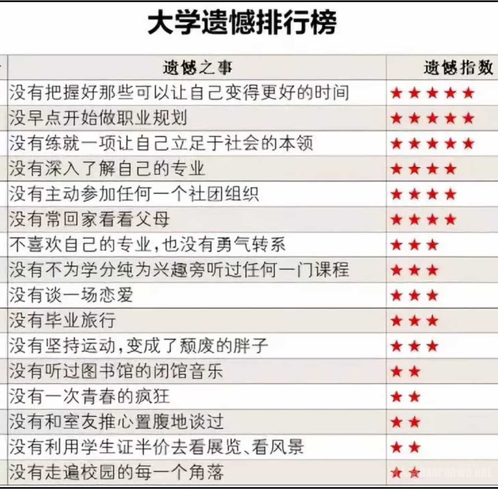

你总说毕业遥遥无期，可我们却转眼各奔东西；我们在如诗如画的夏末到来，很快的，又将在某个烧灼滚烫的初夏离开；时光很大，里面装满了我们光芒万丈的青春；时光也很小，回眸望望也就是一瞬；我们常说，再不疯狂，我们就老了，可是毕业后回首往事追悔不已的人却并不在少数。人们总说，大学是场没有彩排的舞台剧，散场时每个演员都有遗憾。但是，如果及早给予你提醒，那么我们的大学是否就可以没有那么多的缺憾与不完美了呢？大学遗憾排行榜献给你，希望我们都能趁着年轻趁着这为数不多的轻松时光，好好演绎自己的大学生活，呈现一个100分的表现给自己，还有爱我们的人。
图1：大学遗憾排行榜

大学不只是一个地点，它还是一段时间。对于每个人来说，时间是一样的，机会也是均等的。再也没有一段时间像大学一样，可以任你支配；也再没有一段时间的价值，在不同的人身上会有如此不同的体现。你对得起时间，时间就会对得起你。
你选择了一个专业同时，也选择了专门的一脉人类文明、一种独特的思考方式。专业学习与择业不相干的情况不少，但假使你热爱并最终将投身于你的专业对口行业，你应该至少能用最切中要点的话向其他专业的人描述你专业的性质、研究模式、思维特点。
博尔赫斯曾说："如果有天堂，那应该是图书馆的模样。"一座图书馆，不仅可以建立文字和信息的桥梁，连接不同知识领域的孤岛，也可以跨越语言和文化的障碍，为我们的思想带来启迪和认知升级。只要你走进去，只要你翻开那里的书籍，一个浓缩着智慧和思想的世界将向你敞开大门。打开一本书，在图书馆里从晨露微曦坐到灯火阑珊，合上书本时，你的人生可能已经不同。